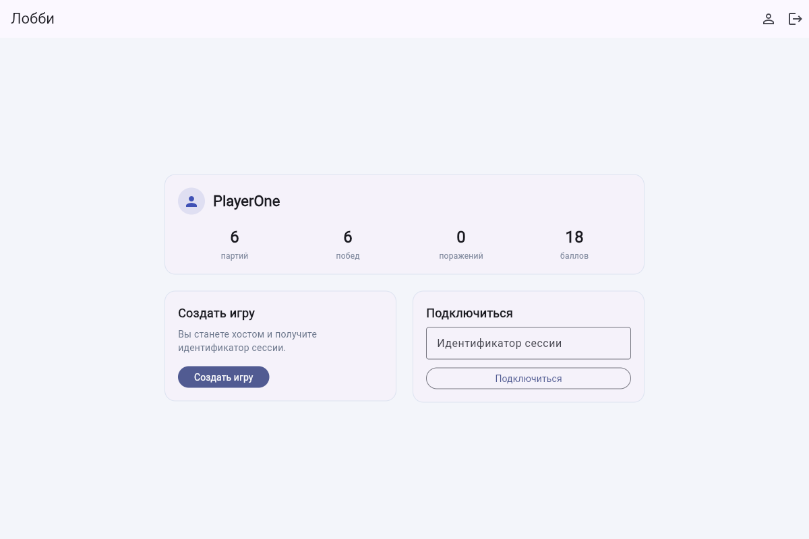
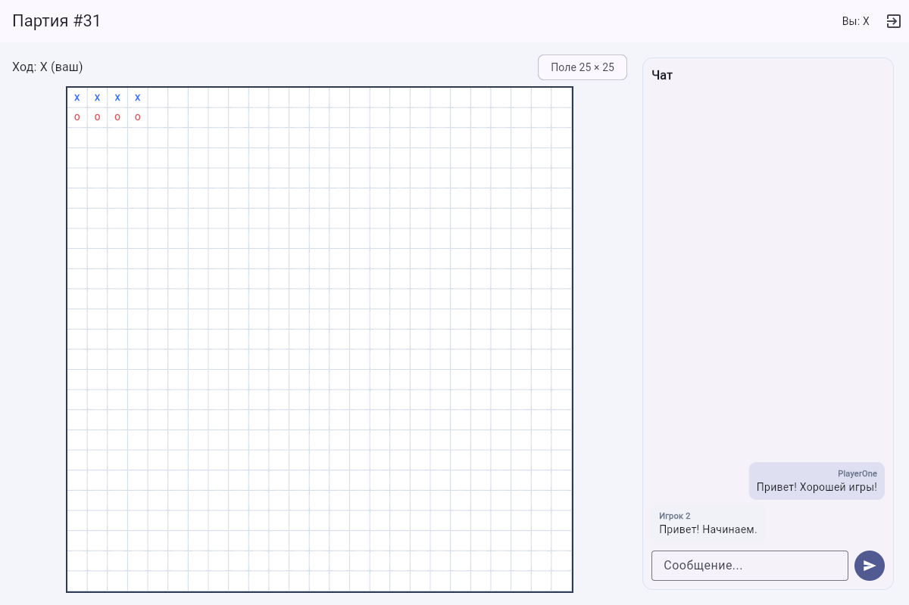

Руководство пользователя
Министерство науки и высшего образования Российской Федерации
Автономная некоммерческая организация профессиональная
образовательная организация Московский международный колледж
цифровых технологий «Академия ТОП»
Факультет Информационных систем и программирования
Кафедра Разработка программного обеспечения
| СОГЛАСОВАНО Руководитель проекта от кафедры, преподаватель _________ /Д. В. Золотухин / «___» ____________ 2026 г. | УТВЕРЖДАЮ Заведующий выпускающей кафедрой ________ / И. О. Фамилия / «___» ___________ 2026 г. |
|---|---|
РУКОВОДСТВО ПОЛЬЗОВАТЕЛЯ
на разработку программного комплекса
«Крестики и нолики»
Код документа: РП.001.2026
| Листов: 10 | Исполнители (разработчики): Студенты группы 9/3 – РПО 24/2 __________ / К. Д. Бызов/ «11» ноября 2026 г. |
|---|---|
МОСКВА — 2026 г.
СОДЕРЖАНИЕ
1. Назначение программы 3
2. Условия выполнения программы 4
3. Выполнение программы 5
3.1. Авторизация 5
3.2. Профиль пользователя 5
3.3. Лобби: создание и подключение к игре 6
3.4. Игровое поле и выполнение ходов 7
3.5. Чат 8
3.6. Завершение партии 8
3.7. Завершение работы 9
4. Сообщения оператору 10
4.1. Сообщения пользователю 10
4.2. Возможные неисправности 10
1. Назначение программы
Руководство пользователя предназначено для игроков, использующих программный комплекс «Крестики и нолики». Программа позволяет двум пользователям провести сетевую партию на поле 25 × 25, обменяться сообщениями в чате, изменить профиль и посмотреть итоговый счёт.
Для работы необходимы: персональный компьютер под управлением Windows 10/11, клиентское приложение, доступ к локальной сети и запущенный сервер. Адрес сервера и порт сообщает администратор. Базовые навыки работы с клавиатурой и мышью достаточны для освоения программы.
В одной игровой сессии участвуют два игрока. Список друзей и мини-игра выбора первого хода в версии 1.0 отсутствуют: для подключения используется идентификатор сессии, который сообщает соперник.
2. Условия выполнения программы
Порядок подготовки:
-
Убедитесь, что компьютер подключён к локальной сети.
-
Запустите клиентское приложение.
-
Введите адрес сервера и порт, если они не заданы по умолчанию.
-
Дождитесь открытия экрана авторизации.
Если сервер недоступен, клиент выводит сообщение о потере соединения. Проверьте адрес, порт и доступность сервера; при необходимости обратитесь к администратору.
3. Выполнение программы
3.1. Авторизация
На экране авторизации введите логин и пароль, выданные администратором, и нажмите «Войти» (рисунок 1).

Рисунок 1 — Экран авторизации
При успешном входе открывается лобби. Если логин или пароль введены неверно, выводится сообщение «Неверный логин или пароль». Пустые поля не отправляются на сервер: программа просит заполнить оба поля.
Пароль чувствителен к регистру. Не сообщайте пароль другим игрокам; администратор не запрашивает пароль в чате или по телефону.
3.2. Профиль пользователя
В лобби отображаются никнейм и статистика: количество партий, побед, поражений и итоговый счёт. Для изменения никнейма нажмите иконку профиля в правом верхнем углу, введите новое имя и нажмите «Сохранить» (рисунок 2).

Рисунок 2 — Редактирование профиля
Никнейм не может быть пустым или состоять только из пробелов. После сохранения изменения отображаются в лобби и в игровой сессии. Статистика обновляется автоматически после завершения каждой партии.
3.3. Лобби: создание и подключение к игре
В лобби доступны две возможности: создать новую игру или подключиться к существующей по идентификатору (рисунок 3).

Рисунок 3 — Лобби
Создание игры:
-
Нажмите «Создать игру».
-
Сервер создаст сессию и покажет её идентификатор.
-
Сообщите идентификатор сопернику.
-
Дождитесь подключения второго игрока.
Подключение к игре:
-
Введите идентификатор сессии, полученный от соперника.
-
Нажмите «Подключиться».
-
После подключения откроется игровое поле.
К занятой сессии третий игрок подключиться не может: сервер выводит сообщение «Сессия заполнена». Если идентификатор введён неверно, появляется сообщение «Сессия не найдена».
3.4. Игровое поле и выполнение ходов
Игровое поле имеет размер 25 × 25 клеток (рисунок 4). Один игрок играет символом X, второй — символом O. В верхней части экрана отображается номер партии и индикатор очереди.

Рисунок 4 — Игровое поле и чат
Чтобы выполнить ход, щёлкните по свободной клетке. Клиент отправит координаты серверу, а поле обновится только после подтверждения. Поле у соперника обновляется в тот же момент.
Правила и ограничения:
– первый ход выполняет игрок X;
– ходы выполняются строго по очереди;
– нельзя выбрать занятую клетку;
– координаты клетки находятся в диапазоне 0–24;
– побеждает игрок, собравший пять своих символов подряд по горизонтали, вертикали или диагонали;
– если поле заполнено, а линии из пяти нет, фиксируется ничья.
При попытке хода не в свою очередь выводится сообщение «Сейчас ход другого игрока», при выборе занятой клетки — «Клетка уже занята». Состояние поля при ошибке не изменяется.
3.5. Чат
Чат расположен справа от игрового поля. Введите сообщение в поле ввода и нажмите кнопку отправки. Сообщение отображается у обоих участников сессии.
Пустые сообщения не отправляются. Нецензурные слова фильтруются сервером и заменяются символами «***»; исходный текст сопернику не передаётся. Не отправляйте в чат персональные данные и пароли.
3.6. Завершение партии
Партия завершается победой одного из игроков или ничьей. В диалоге результатов отображаются победитель и итоговый счёт (рисунок 5). При выходе участника или потере связи партия отменяется, диалог результатов не показывается.

Рисунок 5 — Результат партии
Начисление баллов: 3 балла за победу, 1 балл за ничью, 0 баллов за поражение. После завершения партии можно создать новую игру или выйти из программы. При выходе во время партии продолжение блокируется, соперник получает уведомление.
3.7. Завершение работы
Для выхода из программы закройте окно клиента или выберите «Выход» в меню. Если партия активна, сервер уведомит соперника и заблокирует продолжение. Перед завершением работы рекомендуется доиграть партию или корректно выйти из игры.
4. Сообщения оператору
4.1. Сообщения пользователю
Данные приведены в таблице 1.
Таблица 1 — Основные сообщения
| Сообщение | Причина | Что делать |
|---|---|---|
| Неверный логин или пароль | Ошибка в учётных данных | Проверить логин и пароль |
| Заполните логин и пароль | Пустые поля | Заполнить оба поля |
| Сессия не найдена | Неверный идентификатор | Проверить номер сессии |
| Сессия заполнена | В сессии уже два игрока | Создать новую сессию |
| Сейчас ход другого игрока | Нарушена очередь | Дождаться своего хода |
| Клетка уже занята | Выбрана занятая клетка | Выбрать свободную клетку |
| Координаты вне диапазона | Клетка за пределами поля | Выбрать клетку в диапазоне 0–24 |
| Партия завершена | Сессия закрыта | Создать новую партию |
| Соединение потеряно | Обрыв сети или остановка сервера | Проверить сеть и перезапустить клиент |
4.2. Возможные неисправности
Данные приведены в таблице 2.
Таблица 2 — Возможные неисправности и способы устранения
| Симптом | Вероятная причина | Способ устранения |
|---|---|---|
| Клиент не запускается | Клиентское приложение не установлено или повреждено | Переустановить клиент, обратиться к администратору |
| Не удаётся подключиться к серверу | Неверный адрес/порт, сервер остановлен, порт закрыт | Проверить адрес и порт, сообщить администратору |
| Поле не обновляется | Потеря соединения | Проверить сеть, перезапустить клиент |
| Сообщение в чат не отправляется | Пустой текст или нет соединения | Ввести текст, проверить соединение |
| Не отображается статистика | Ошибка базы данных | Сообщить администратору |